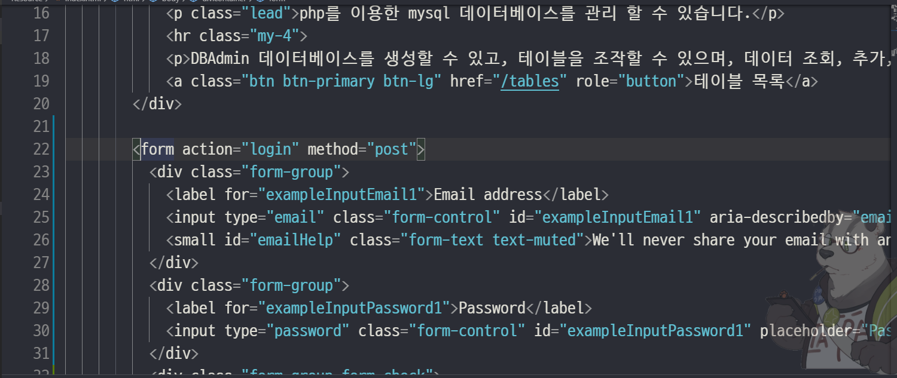
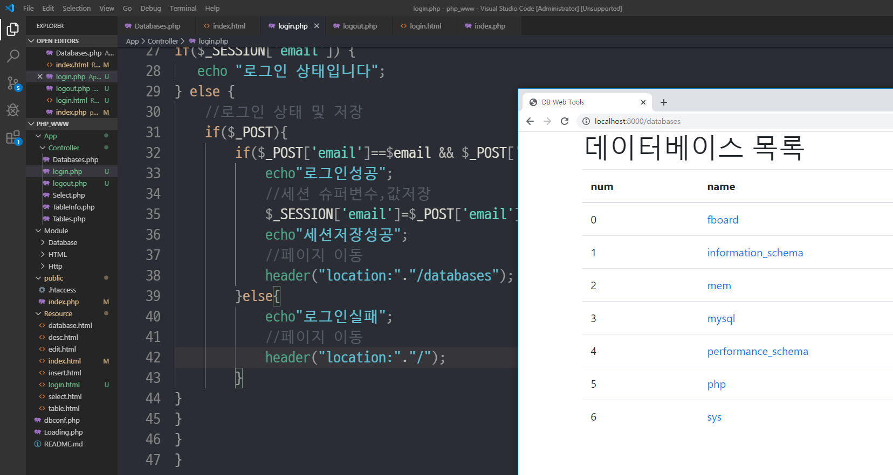
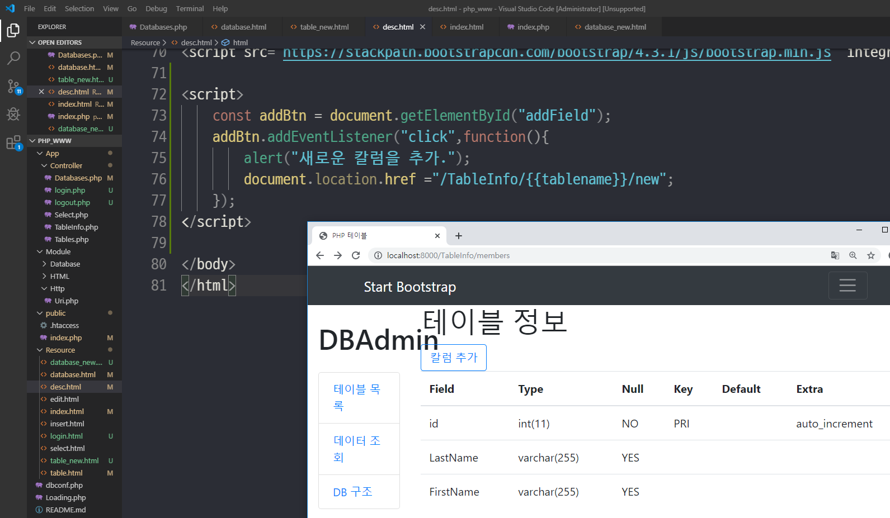
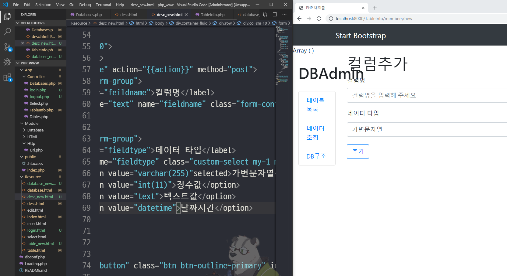

13주차 수업 2019.11.20
PHP 로그인 및 테이블 컬럼 추가, 데이터 삭제

부트 스트랩에서 로그인 소스를 가져온다.

email(로그인 아이디) 정보를 가져올 수 있도록 액션과 name을 붙여준다.

email값을 가져와 비교해 로그인이 되는지 확인해본다.

로그인 확인이 되면 페이지를 가져오는 코드를 추가한다.

데이터 베이스를 생성 할 수 있는 페이지 추가


버튼을 누르면 컬럼 명 및 데이터 타입을 기입하여 테이블 컬럼을 추가 할 수 있는 페이지 추가

테이블 정보 조회 시 삭제 버튼을 누를시 테이블이 삭제되는 기능 추가